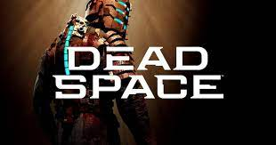
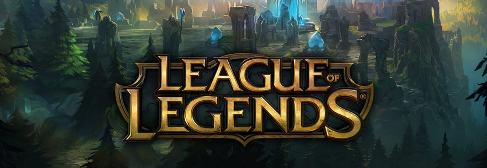

- Después de un montón de rumores y reportes, el remake de Dead Space por fin es oficial.
Aún hay varias preguntas por resolver sobre esta reinterpretación del clásico de terror, pero por lo menos ya conocemos a uno de los nombres más importantes de su equipo creativo.
Lo que pasa es que se confirmó que Eric Baptizat, director de Assassin’s Creed: Valhalla y otros proyectos de Ubisoft, es es director del remake de Dead Space.
Esto lo sabemos gracias a que actualizó su perfil de LinkedIn para informar que se unió a EA Motive para trabajar en Dead Space.
Recordemos que este creativo trabajó en Ubisoft durante 16 años y en 2020 abandonó al distribuidor para trabajar en un título por confirmar.
En su tiempo como creativo de Ubisoft, Baptizat únicamente trabajó como director en un juego: Assassin’s Creed Valhalla. Dicho esto, tuvo cargos importantes (como de diseñador principal) en otros juegos como Assassin’s Creed Origins, Assassin’s Creed Unity y Assassin’s Creed Black Flag.
El remake de Dead Space fue anunciado en EA Play LIVE 2021. El proyecto fue mostrado como un remake y una interpretación del juego original. Esto quiere decir que contará con la misma premisa que el lanzamiento para Xbox 360, PlayStation 3 y PC sólo que contará con una historia mejorada, nuevas mecánicas de juego y más. Según reportes, lo que EA quiere hacer con Dead Space es lo que Capcom logró con el remake de Resident Evil 2.

.jpg) volver
volver